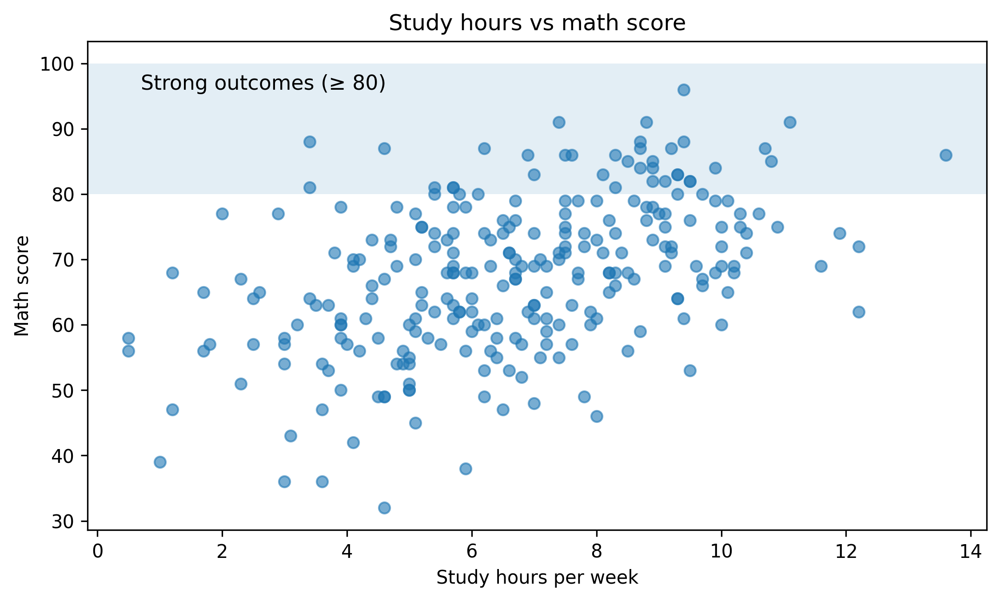
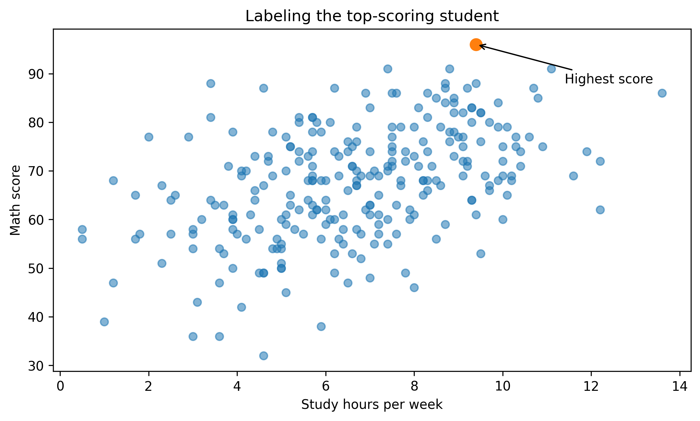
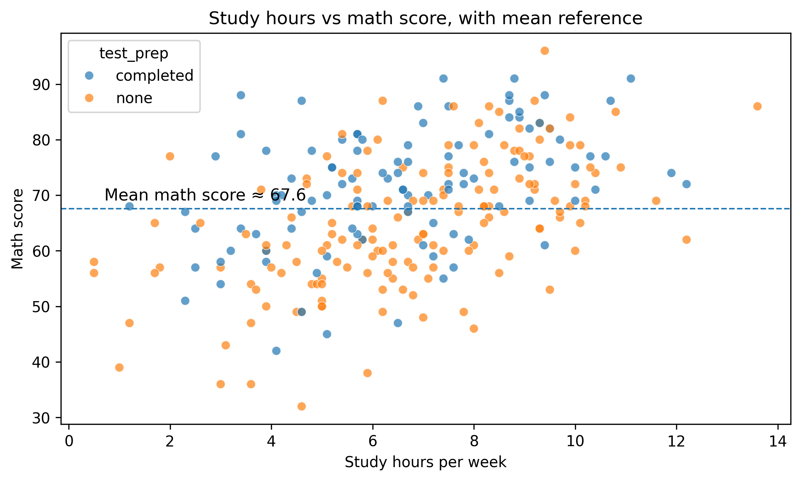
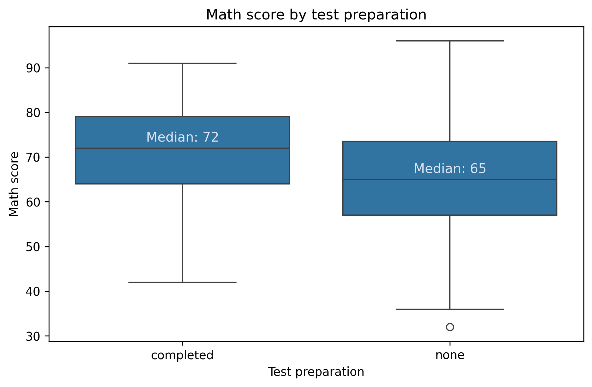
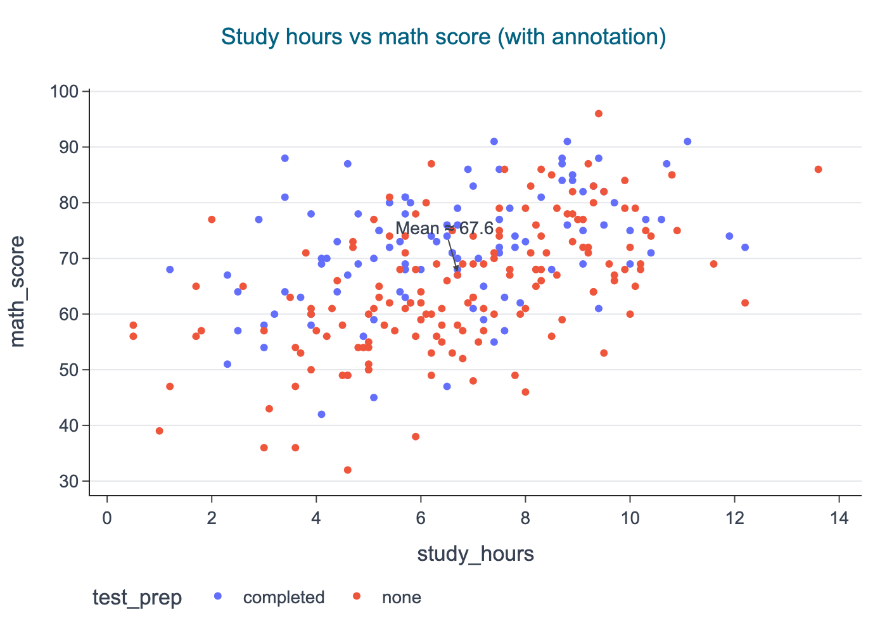

Most “professional” plots are not about fancy chart types.
They are about clarity:
the figure communicates the point without extra narration
key comparisons are labeled
axes and titles carry meaning
annotations guide attention
In this lesson you will learn how to polish figures using:
Matplotlib annotations and text
Seaborn overlays and reference lines
Plotly annotations for interactive exploration
All outputs are exported to figures/ using CDI helpers.
Setup
import warningsimport pandas as pdimport matplotlib.pyplot as pltimport seaborn as snsfrom cdi_viz.theme import ( cdi_notebook_init, show_and_save_mpl,)warnings.filterwarnings("ignore")cdi_notebook_init(chapter="08")df = pd.read_csv("data/cdi-student-outcomes.csv")print(df.head())
group test_prep study_hours math_score reading_score writing_score
0 Group B completed 3.9 58 64 51
1 Group A none 7.7 67 85 61
2 Group A none 9.3 83 65 73
3 Group A none 3.9 60 67 48
4 Group A none 8.3 68 63 47
Matplotlib: highlight a key region
A simple but effective technique: highlight the region where a decision threshold matters.
Example: mark the “strong outcome” zone for math score.
fig, ax = plt.subplots(figsize=(7.6, 4.6))ax.scatter(df["study_hours"], df["math_score"], alpha=0.6)ax.set_title("Study hours vs math score")ax.set_xlabel("Study hours per week")ax.set_ylabel("Math score")# Reference bandax.axhspan(80, 100, alpha=0.12)ax.text( x=df["study_hours"].min() +0.2, y=96, s="Strong outcomes (≥ 80)", fontsize=11,)fig.tight_layout()show_and_save_mpl(fig) # figures/08_001.png
Saved PNG → figures/08_001.png

Matplotlib: label a specific point
If a single point drives your interpretation, label it.
# Find the top math score (one example point)top_idx = df["math_score"].idxmax()pt = df.loc[top_idx]fig, ax = plt.subplots(figsize=(7.6, 4.6))ax.scatter(df["study_hours"], df["math_score"], alpha=0.55)ax.scatter([pt["study_hours"]], [pt["math_score"]], s=80)ax.set_title("Labeling the top-scoring student")ax.set_xlabel("Study hours per week")ax.set_ylabel("Math score")ax.annotate("Highest score", xy=(pt["study_hours"], pt["math_score"]), xytext=(pt["study_hours"] +2, pt["math_score"] -8), arrowprops=dict(arrowstyle="->"),)fig.tight_layout()show_and_save_mpl(fig) # figures/08_002.png
Saved PNG → figures/08_002.png

Tip: avoid labeling too many points. If everything is labeled, nothing is emphasized.
Seaborn: add a reference line (mean)
Reference lines help readers orient quickly.
fig, ax = plt.subplots(figsize=(7.6, 4.6))sns.scatterplot(data=df, x="study_hours", y="math_score", hue="test_prep", alpha=0.7, ax=ax)mean_score = df["math_score"].mean()ax.axhline(mean_score, linestyle="--", linewidth=1)ax.set_title("Study hours vs math score, with mean reference")ax.set_xlabel("Study hours per week")ax.set_ylabel("Math score")ax.text( x=df["study_hours"].min() +0.2, y=mean_score +1.5, s=f"Mean math score ≈ {mean_score:.1f}", fontsize=11,)fig.tight_layout()show_and_save_mpl(fig) # figures/08_003.png
Saved PNG → figures/08_003.png

Seaborn: annotate group summaries
When using box plots, add the summary as text only if it improves the message.
Here we add medians above each group.
fig, ax = plt.subplots(figsize=(7.0, 4.6))sns.boxplot(data=df, x="test_prep", y="math_score", ax=ax)ax.set_title("Math score by test preparation")ax.set_xlabel("Test preparation")ax.set_ylabel("Math score")# Add median labelsmedians = df.groupby("test_prep")["math_score"].median()for i, cat inenumerate(medians.index): ax.text( i, medians[cat] +1.5,f"Median: {medians[cat]:.0f}", ha="center", fontsize=11, color="#dbe2f0", # light grey (CDI-friendly) )fig.tight_layout()show_and_save_mpl(fig)
Saved PNG → figures/08_004.png

Plotly: annotations for interactive exploration
Plotly is useful for exploration because you can inspect points. But you can also add annotations to guide the reader.
import plotly.express as pxfrom cdi_viz.theme import cdi_theme, show_and_save_plotlyfig = px.scatter( df, x="study_hours", y="math_score", color="test_prep", hover_data=["group", "reading_score", "writing_score"], title="Study hours vs math score (with annotation)",)# Add an annotation near the meanmean_score = df["math_score"].mean()fig.add_hline(y=mean_score, line_dash="dash")fig.add_annotation( x=df["study_hours"].median(), y=mean_score, text=f"Mean ≈ {mean_score:.1f}", showarrow=True, arrowhead=2, ay=-35,)cdi_theme(fig)show_and_save_plotly(fig, show=False) # figures/08_005.png
Saved PNG → figures/08_005.png

A polish checklist
Before you export a figure, check:
Does the title answer a question, not just name variables?
Are axis labels readable and specific?
Is there unnecessary legend clutter?
Is the key comparison highlighted?
Are annotations minimal and purposeful?
Would a reader understand the plot without you speaking?
Key Takeaways
Annotations turn plots into explanations.
Use reference lines and bands to show thresholds.
Label only the points that matter.
Add summaries only when they improve the message.
Keep the figure readable without narration.
Exercises
Add a threshold band to a histogram (choose a meaningful cutoff).
Label one extreme point (max or min) on a scatter plot.
Add median labels on a box plot for reading_score by test_prep.
In Plotly, add a vertical line at the median of study_hours and annotate it.